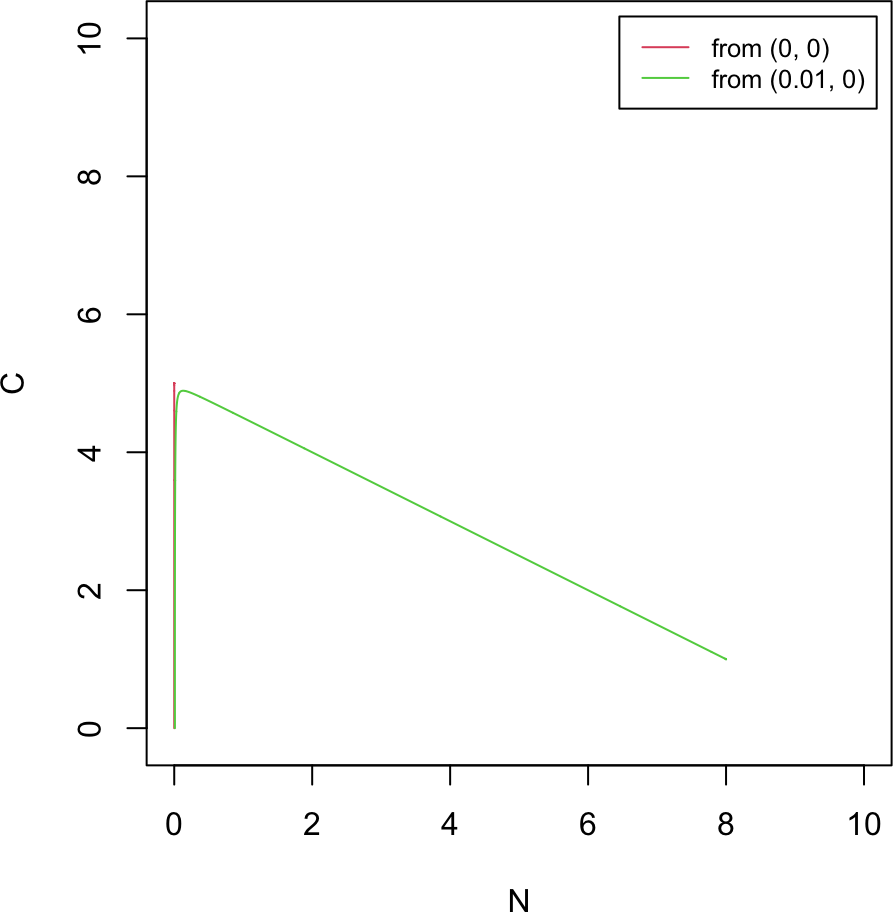
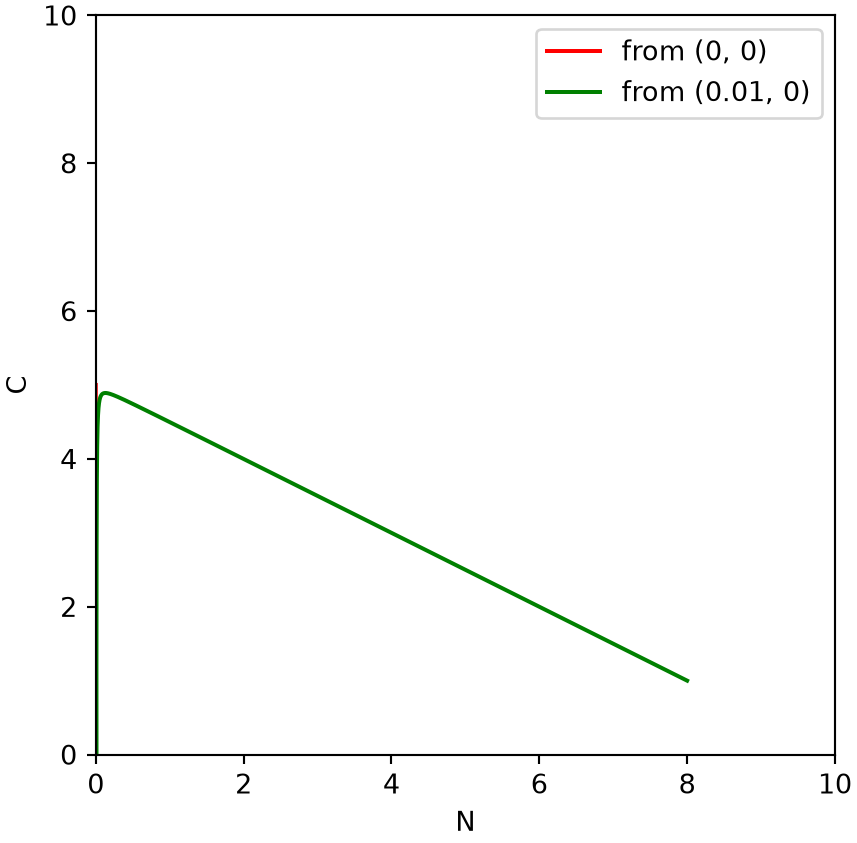
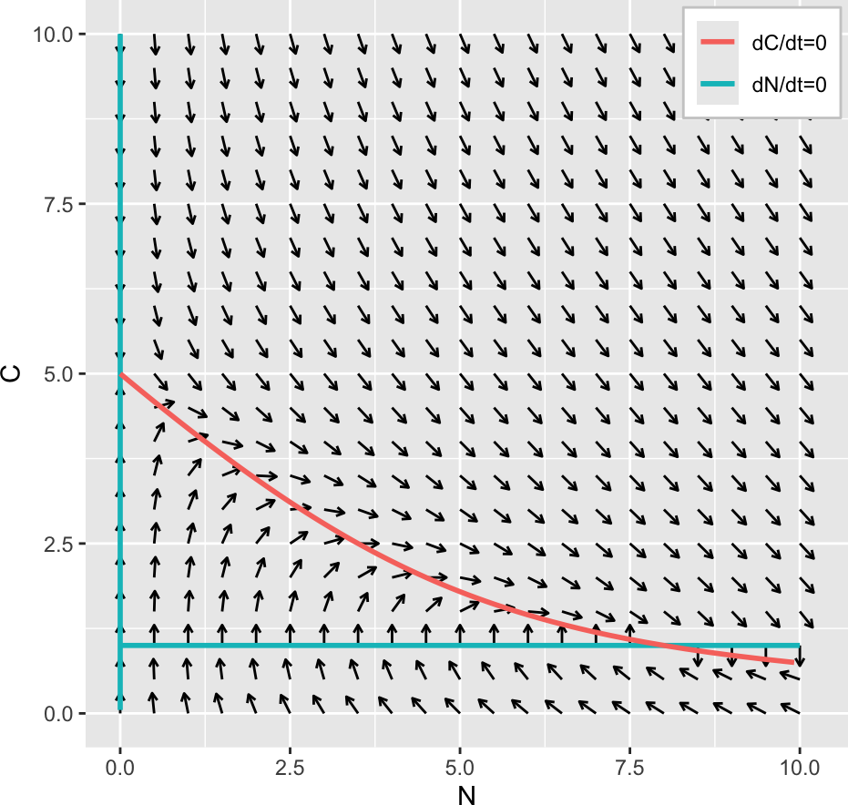
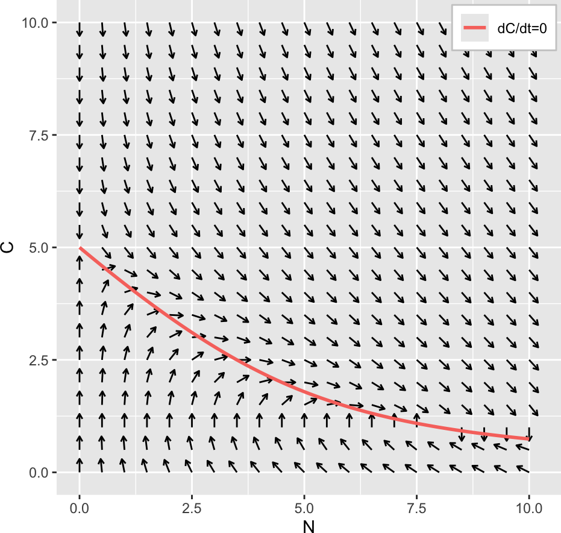
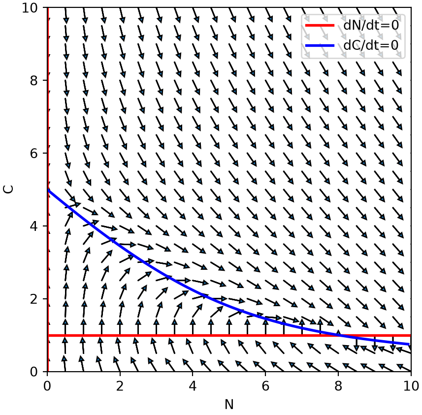
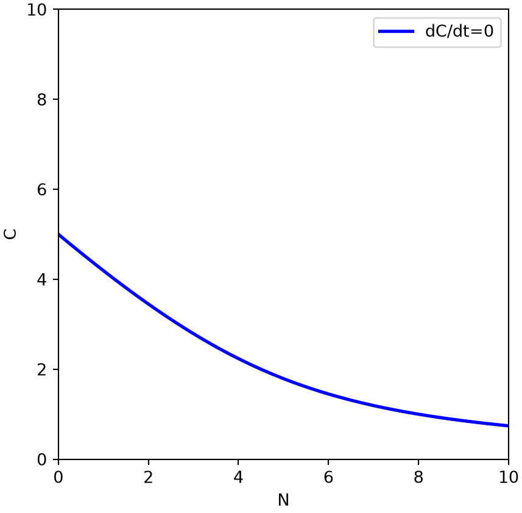

derivs_chemostat <- function(t, Xs, alpha1, alpha2) { # dimensionless chemostat
N <- Xs[1]; C <- Xs[2]
mm <- N * C / (1 + C) # Michaelis-Menten uptake
c(alpha1 * mm - N, -mm - C + alpha2)
}
# generic multi-variable RK4 (same as Part 3A)
RK4_generic <- function(derivs, X0, t.total, dt, ...) {
t_all <- seq(0, t.total, by = dt); n_all <- length(t_all)
X_all <- matrix(0, n_all, length(X0)); X_all[1, ] <- X0
for (i in 1:(n_all - 1)) {
t0 <- t_all[i]
k1 <- dt * derivs(t0, X_all[i, ], ...)
k2 <- dt * derivs(t0 + dt / 2, X_all[i, ] + k1 / 2, ...)
k3 <- dt * derivs(t0 + dt / 2, X_all[i, ] + k2 / 2, ...)
k4 <- dt * derivs(t0 + dt, X_all[i, ] + k3, ...)
X_all[i + 1, ] <- X_all[i, ] + (k1 + 2 * k2 + 2 * k3 + k4) / 6
}
cbind(t_all, X_all)
}3C. Modeling a chemostat
This chapter applies the phase-plane toolkit of Part 3A and Part 3B to a different two-variable system, the classic chemostat model of bacterial growth in continuous culture (Sontag 2026). It introduces no new methods; the numerical steps are the same as before (RK4 integration, vector fields, nullclines, steady-state stability), so the focus is on setting up a new model and reusing that machinery in both R and Python. Practice questions are embedded throughout.
3C.1 Chemostat model
A chemostat is a continuous culture device: fresh medium is pumped in at a constant rate and an equal volume of culture (cells plus medium) is drawn off, so the working volume stays fixed. Writing \(N\) for the (scaled) bacterial population and \(C\) for the (scaled) limiting-nutrient concentration, the dimensionless model is (Sontag 2026)
\[\begin{equation} \begin{cases} \dfrac{dN}{dt} = f(N, C) = \alpha_1 \left(\dfrac{C}{C + 1}\right) N - N \\[2mm] \dfrac{dC}{dt} = g(N, C) = -\left(\dfrac{C}{C + 1}\right) N - C + \alpha_2 \end{cases} \tag{1} \end{equation}\]
The \(\frac{C}{C+1}\) term is Michaelis-Menten nutrient uptake, \(\alpha_1\) sets the maximum growth rate relative to the washout rate, and \(\alpha_2\) is the scaled inflow nutrient concentration. Setting both derivatives to zero gives two steady states,
\[ \bar{X}_1 = (0, \alpha_2) \qquad \text{and} \qquad \bar{X}_2 = \left(\alpha_1\left(\alpha_2 - \frac{1}{\alpha_1 - 1}\right),\ \frac{1}{\alpha_1 - 1}\right) . \tag{2} \]
\(\bar{X}_1\) is the washout state (no bacteria); \(\bar{X}_2\) is the coexistence state. For both to be physical (non-negative coordinates) we need \(\alpha_1 > 1\) and \(\alpha_2 > \frac{1}{\alpha_1 - 1}\). Throughout we take \(\alpha_1 = 2\) and \(\alpha_2 = 5\), for which \(\bar{X}_1 = (0, 5)\) and \(\bar{X}_2 = (8, 1)\).
3C.2 Simulation and the phase plane
We integrate with the same generic RK4 routine as Part 3A, now carrying \(\alpha_1\) and \(\alpha_2\) as extra parameters. Starting exactly at \(N = 0\) the population cannot grow, so the system relaxes to the washout state \(\bar{X}_1 = (0, 5)\). Seeding an arbitrarily small population instead (\(N(0) = 0.01\)) sends the very same dynamics to the coexistence state \(\bar{X}_2 = (8, 1)\): the trajectory first drifts toward \(\bar{X}_1\), then peels away and ends at \(\bar{X}_2\). The phase plane below shows both trajectories.
NoteRecipe 3C.2.1
Objective. Simulate a chemostat (population N and substrate C) and see it reach either washout or coexistence.
Model. Population N grows on nutrient by Michaelis-Menten uptake and washes out at the dilution rate, while substrate C is consumed and fed in at a scaled rate: dN/dt = a1*(C/(C+1))*N - N, dC/dt = -(C/(C+1))*N - C + a2.
Method. The generic multi-variable RK4 from Part 3A, integrating the chemostat ODEs with the feed and dilution parameters.
Test. a1 = 2, a2 = 5 (giving a washout state (0, 5) and a coexistence state (8, 1)); from N(0) = 0 and from a tiny seed N(0) = 0.01.
Show. A phase-plane plot of the two trajectories, one reaching washout (0, 5) and one coexistence (8, 1).
Verification. Starting at N = 0 relaxes to the washout state (0, 5); a tiny seed instead ends at the coexistence state (8, 1), first drifting toward washout then peeling away.
R implementation
alpha1 <- 2; alpha2 <- 5
res1 <- RK4_generic(derivs_chemostat, c(0, 0), 20, 0.01, alpha1, alpha2) # washout
res2 <- RK4_generic(derivs_chemostat, c(0.01, 0), 20, 0.01, alpha1, alpha2) # tiny seed
plot(NULL, xlab = "N", ylab = "C", xlim = c(0, 10), ylim = c(0, 10), asp = 1)
lines(res1[, 2], res1[, 3], col = 2) # -> washout state (0, 5)
lines(res2[, 2], res2[, 3], col = 3) # -> coexistence state (8, 1)
legend("topright", inset = 0.02, legend = c("from (0, 0)", "from (0.01, 0)"),
col = 2:3, lty = 1, cex = 0.8)
Python implementation
import numpy as np
import matplotlib.pyplot as plt
def derivs_chemostat(t, Xs, alpha1, alpha2): # dimensionless chemostat
N, C = Xs
mm = N * C / (1 + C) # Michaelis-Menten uptake
return [alpha1 * mm - N, -mm - C + alpha2]
# generic multi-variable RK4 (same as Part 3A)
def RK4_generic(derivs, X0, t_total, dt, **kw):
t_all = np.arange(0, t_total + dt, dt); n = len(t_all)
X_all = np.zeros((n, len(X0))); X_all[0] = X0
for i in range(n - 1):
t0 = t_all[i]
k1 = dt * np.array(derivs(t0, X_all[i], **kw))
k2 = dt * np.array(derivs(t0 + dt / 2, X_all[i] + k1 / 2, **kw))
k3 = dt * np.array(derivs(t0 + dt / 2, X_all[i] + k2 / 2, **kw))
k4 = dt * np.array(derivs(t0 + dt, X_all[i] + k3, **kw))
X_all[i + 1] = X_all[i] + (k1 + 2 * k2 + 2 * k3 + k4) / 6
return np.column_stack((t_all, X_all))alpha1, alpha2 = 2.0, 5.0
res1 = RK4_generic(derivs_chemostat, [0, 0], 20, 0.01, alpha1=alpha1, alpha2=alpha2)
res2 = RK4_generic(derivs_chemostat, [0.01, 0], 20, 0.01, alpha1=alpha1, alpha2=alpha2)
plt.plot(res1[:, 1], res1[:, 2], color="red", label="from (0, 0)") # -> (0, 5)
plt.plot(res2[:, 1], res2[:, 2], color="green", label="from (0.01, 0)") # -> (8, 1)
plt.gca().set_aspect("equal"); plt.xlim(0, 10); plt.ylim(0, 10)(0.0, 10.0)
(0.0, 10.0)plt.xlabel("N"); plt.ylabel("C"); plt.legend(loc="upper right"); plt.show()
NotePractice Q1
Repeat the simulation for the initial conditions (a) \(X(0) = \bar{X}_1 = (0, 5)\); (b) \((0.01, 5)\), slightly off \(\bar{X}_1\) in \(N\); and (c) \((0, 5.01)\), slightly off in \(C\). Which perturbations decay back to \(\bar{X}_1\) and which grow away toward \(\bar{X}_2\)? What does that already tell you about the stability of \(\bar{X}_1\)?
NotePractice Q2
Vary \(\alpha_1\) and \(\alpha_2\) and confirm that the coexistence state \(\bar{X}_2\) follows Equation (2). For which parameter values do both steady states stay physical (non-negative)?
NotePractice Q3
Let \(Z(t) = N(t) + \alpha_1 C(t) - \alpha_1 \alpha_2\). Show analytically that \(Z(t) = Z(0)\, e^{-t}\), so \(Z \to 0\) from any start. Verify it in a simulation, and show that the line \(Z(N, C) = 0\) passes through both \(\bar{X}_1\) and \(\bar{X}_2\). This is one way to prove that \(\bar{X}_2\) is the global attractor of the chemostat.
3C.3 Vector field and nullclines
Drawing the unit vector field over the phase plane shows the flow at a glance, exactly as in Part 3A. Overlaying the two nullclines locates the steady states at their crossings. The chemostat’s N-nullcline (\(dN/dt = 0\)) factors into two straight pieces, \(N = 0\) and \(C = \frac{1}{\alpha_1 - 1}\), while the C-nullcline (\(dC/dt = 0\)) solves analytically for \(N\) as a function of \(C\),
\[ N(C) = \frac{\alpha_2}{C} + \alpha_2 - 1 - C . \tag{3} \]
Sweeping \(C\) traces it directly. When separation of variables is not available, the same nullcline can be found by root finding: for each fixed \(N\), solve \(g(N, C) = 0\) for \(C\). Both are shown below; the contour and continuation methods of Part 3A apply here too and are left as practice.
R implementation
library(ggplot2)
# unit vector field on a grid (arrows normalized to a fixed length)
grid <- expand.grid(N = seq(0, 10, 0.5), C = seq(0, 10, 0.5))
vfu <- t(apply(grid, 1, function(Xs) {
v <- derivs_chemostat(0, Xs, alpha1, alpha2)
c(Xs, v / sqrt(sum(v^2)))
}))
vfu <- as.data.frame(vfu); colnames(vfu) <- c("N", "C", "dN", "dC")
p_field <- ggplot(vfu, aes(N, C)) +
geom_segment(aes(xend = N + 0.3 * dN, yend = C + 0.3 * dC),
arrow = arrow(length = unit(0.05, "in"))) +
coord_fixed() # equal N/C scale: a square phase plane
# nullclines by separation of variables
C_grid <- seq(0.05, 10, 0.05); N_grid <- seq(0, 10, 0.05)
nullN_1 <- data.frame(N = 0, C = C_grid) # dN/dt=0: N = 0
nullN_2 <- data.frame(N = N_grid, C = 1 / (alpha1 - 1)) # dN/dt=0: C = 1/(alpha1-1)
nullC <- data.frame(N = alpha2 / C_grid + alpha2 - 1 - C_grid, C = C_grid) # dC/dt=0
nullC <- nullC[nullC$N >= 0 & nullC$N <= 10, ] # keep within the plotted range
p_field +
geom_path(data = nullN_1, aes(N, C, colour = "dN/dt=0"), linewidth = 1) +
geom_path(data = nullN_2, aes(N, C, colour = "dN/dt=0"), linewidth = 1) +
geom_path(data = nullC, aes(N, C, colour = "dC/dt=0"), linewidth = 1) +
labs(colour = NULL) +
theme(legend.position = c(0.99, 0.99), legend.justification = c(1, 1),
legend.background = element_rect(fill = "white", colour = "grey80"))
# C-nullcline by root finding: solve g(N, C) = 0 for C at each N (rootSolve)
library(rootSolve)
g_C <- function(C, N, alpha2) -N * C / (1 + C) - C + alpha2
nullC_root <- do.call(rbind, lapply(seq(0, 10, 0.1), function(N) {
cbind(N = N, C = uniroot.all(g_C, interval = c(0, 10), N = N, alpha2 = alpha2))
}))
p_field +
geom_path(data = as.data.frame(nullC_root), aes(N, C, colour = "dC/dt=0"), linewidth = 1) +
labs(colour = NULL) +
theme(legend.position = c(0.99, 0.99), legend.justification = c(1, 1),
legend.background = element_rect(fill = "white", colour = "grey80"))Warning: Removed 2 rows containing missing values or values outside the scale range
(`geom_segment()`).
Python implementation
# unit vector field on a grid (arrows normalized to a fixed length)
N_ax = np.arange(0, 10.01, 0.5); C_ax = np.arange(0, 10.01, 0.5)
grid = np.array(np.meshgrid(N_ax, C_ax)).T.reshape(-1, 2)
def unit_arrow(N, C, scale=0.3):
v = np.array(derivs_chemostat(0, (N, C), alpha1, alpha2))
n = np.sqrt(v @ v)
return scale * v / n if n > 0 else np.zeros(2)
for N, C in grid:
dN, dC = unit_arrow(N, C)
plt.arrow(N, C, dN, dC, head_width=0.12, head_length=0.12, ec="black")
# nullclines by separation of variables
C_grid = np.arange(0.05, 10.01, 0.05); N_grid = np.arange(0, 10.01, 0.05)
plt.plot(np.zeros_like(C_grid), C_grid, color="red", lw=2, label="dN/dt=0") # N = 0
plt.plot(N_grid, np.full_like(N_grid, 1 / (alpha1 - 1)), color="red", lw=2) # C = 1/(alpha1-1)
nullC_N = alpha2 / C_grid + alpha2 - 1 - C_grid # dC/dt=0, Eq (3)
keep = (nullC_N >= 0) & (nullC_N <= 10)
plt.plot(nullC_N[keep], C_grid[keep], color="blue", lw=2, label="dC/dt=0")
plt.gca().set_aspect("equal"); plt.xlim(0, 10); plt.ylim(0, 10)(0.0, 10.0)
(0.0, 10.0)plt.xlabel("N"); plt.ylabel("C"); plt.legend(loc="upper right"); plt.show()
# C-nullcline by root finding: solve g(N, C) = 0 for C at each N.
# g(N, C) = 0 has a single positive root per N, so a bracketing solver (brentq)
# suffices; R's rootSolve::uniroot.all would instead return every root in [0, 10].
from scipy.optimize import brentq
def g_C(C, N, alpha2):
return -N * C / (1 + C) - C + alpha2
N_grid = np.arange(0, 10.01, 0.1)
nullC_root = np.array([[N, brentq(g_C, 0.01, 10, args=(N, alpha2))] for N in N_grid])
plt.plot(nullC_root[:, 0], nullC_root[:, 1], color="blue", lw=2, label="dC/dt=0")
plt.gca().set_aspect("equal"); plt.xlim(0, 10); plt.ylim(0, 10)(0.0, 10.0)
(0.0, 10.0)plt.xlabel("N"); plt.ylabel("C"); plt.legend(loc="upper right"); plt.show()
NotePractice Q4
Compute the C-nullcline by ODE relaxation instead of root finding: for each fixed \(N\), treat \(\frac{dC}{dt} = g(N, C)\) as a one-variable ODE, start from \((N, 0)\), and integrate to steady state to get \(C\). Sweep \(N\) to trace the whole nullcline. How does this compare to root finding in robustness and generality?
NotePractice Q5
A related, warm-started sweep: begin at \((0, 0)\), relax \(C\) to steady state at fixed \(N\), record \((N, C)\), then step \(N \to N + \Delta N\) using the previous \(C\) as the new starting point, and repeat up to \(N = 15\). Implement it and compare with Q4.
3C.4 Steady states and stability
The steady states are the intersections of the two nullclines, and their stability follows from the eigenvalues of the Jacobian. Both the line-intersection routines (find_intersection, find_intersection_all_fast) and the numerical Jacobian classifier (stability_2D) are exactly the ones built in Part 3B, so rather than repeat them we apply them directly to the chemostat’s nullclines.
Doing so returns the two steady states of Equation (2). The Jacobian eigenvalues classify \(\bar{X}_2 = (8, 1)\) as a stable node and \(\bar{X}_1 = (0, 5)\) as a saddle. This is consistent with the simulations of 3C.2, where a trajectory started at the washout state \(\bar{X}_1\) was driven away by the smallest seed population and settled on the coexistence state \(\bar{X}_2\).
NotePractice Q7
The N-nullcline is stored as two separate line pieces (\(N = 0\) and \(C = \frac{1}{\alpha_1 - 1}\)), so running the all-pairs intersection search of Part 3B can report the same steady state more than once. Why does that happen, and how would you deduplicate the results? Then apply find_intersection_all_fast and stability_2D to reproduce the classification above.